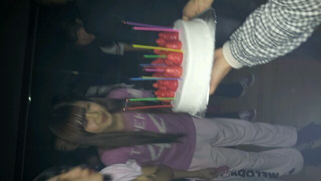

hello☆! !
ろってぃ-だよ ♪
今日も レッスンルームで
歌って踊ってきたってばよぅ
(*・∀・)//いぇいいぇい。
3時間やったよん♪
早く 本番前日とかにする
なっがぁ〜い
リハーサルがしたいなん´・∀・)
全員 苦じゃないもん ♪るん
１日かけて皆で
リハーサルするのが好き 笑
そして
エナジードリンクが
大好き...
誰も この事は
しらなかったでしょぉ〜ぅ
>ω<))?笑
まひろ エナジードリンク系
大好きなんよぉ〜。
あっ、そだそだ(*^^*)
皆様 乃木坂センター試験
やってますかぁ´ω`))?
まひろの出番は
明日あたりかなっ？ウキウキ♪
もしかすると、
みさみさの質問に
まひろも写りこんで
いるかもしれない´▽`))
そんな みしゃみしゃ♪と
パシャリ ))
ど-だ☆?
それとこれもどだ?

りな、さゆにゃんの
お誕生日に皆で食べた
ケーキ ☆
めちゃデカっ! !
だけどあっとゆーまに
なくなるねん。
皆のスピード
おそるべしっ っ 、、、 笑
莓 食べよ思ったら
ケーキの方に
フォークをもってく
動作をしてるうちに
全ての莓を
食べられちゃいましたっ (*^^*)
やばいっ ))
皆の瞬発力に
ついていけてない、まひろ(>ω<)笑
ちょっと 明日朝ごはん
食べるとき、
お箸を瞬時に食べ物まで
持っていく動作の
練習でもしよかな 笑
うんっ !
・・・・・・
おやすみなさい...*´▽`*のし